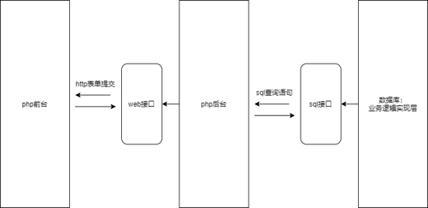
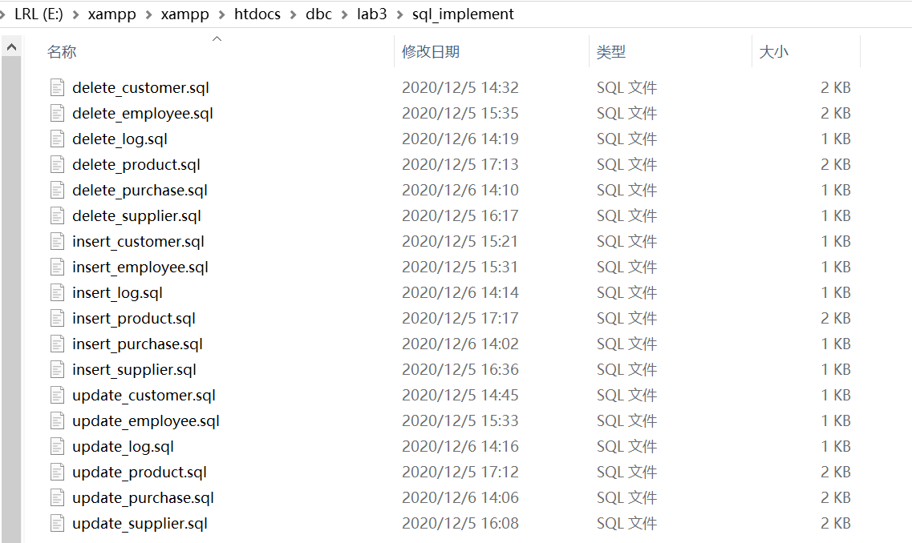
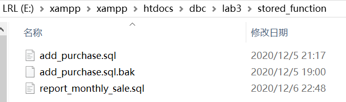
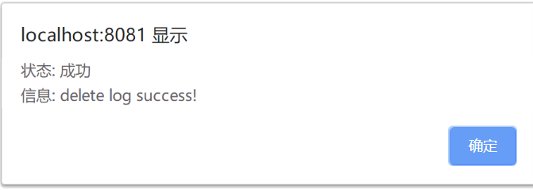
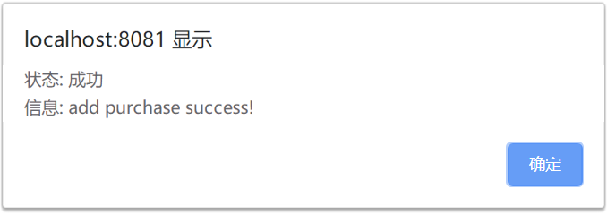

2018171028 李若龙 实验3 文档
还就内个概述

我的项目分为三个模块，其中拥有两类接口，分别是
- sql 级别接口：通过 sql 语句调用并且拥有规范化的返回值
- web 级别接口：通过 http 表单提交调用，有着特定化的提交参数，返回内容通常是一个定制的 web 页面
数据库级别的 sql 接口
首先来看 sql 接口。这些程序与事务逻辑被直接焊死在数据库中，并且暴露在外提供一些 sql 存储过程（函数）。其中这些接口又分为三大类：
- 全表查询接口
- 数据管理接口
- 自定义事务接口
下面我们来细🔒每一个接口及其作用。
全表查询接口
全表查询接口的注册脚本，存储在项目的 stored_procedure 目录下。

我们有 6 张数据表，那么理应有 6 个全表查询接口。这些接口都以 show_ xxx 为格式。他们分别是：
| 接口名称 | 参数 | 返回值 |
|---|---|---|
| show_customers | 无 | customers 表的所有字段 |
| show_employees | 无 | employees 表的所有字段 |
| show_logs | 无 | logs 表的所有字段 |
| show_products | 无 | products 表的所有字段 |
| show_purchases | 无 | purchases 表的所有字段 |
| show_suppliers | 无 | suppliers 表的所有字段 |
数据管理接口
数据管理接口的注册脚本，存储在项目目录下的 sql_implement 目录下。

这些接口涉及数据表数据的管理。我们注册了 增加，更新，删除 三种操作的接口，以规范化地管理数据。此外，这些接口的返回值都是固定的，两个字段。下面的表格给出了数据管理接口的返回值规范：
| 字段名 | 参数类型 | 解释 |
|---|---|---|
| st | int | 操作是否成功（0 or 1） |
| msg | varchar(64) | 提示信息（比如操作为何失败） |
此外，所有的数据管理接口都以 xxxx_yyyy 命名。其中 xxxx 是操作类型，yyyy 是表名称。
customers 表的数据管理接口
customers 表有三个数据管理接口。其中 insert_customer 和 update_customer 接口需要接收 customers 表的所有字段（请按照下文给定的顺序传输）他们分别是：
| 参数位置 | 参数类型 | 对应数据库字段名 | 解释 |
|---|---|---|---|
| 1 | int | cid | 顾客 id |
| 2 | varchar | cname | 顾客名称 |
| 3 | varchar | city | 顾客所在城市 |
| 4 | int | visits_made | 购买次数 |
| 5 | datetime | last_visit_time | 上次购买时间 |
示例：
xxxxxxxxxxcall insert_customer(1, "bob", "ShangHai", 14, 9)而 delete_customer 的调用只需要一个参数，那就是要删除的顾客的 id。下面是 delete_customer 的调用示例：
xxxxxxxxxxcall delete_customer(1)
employees 表的数据管理接口
employees 表有三个数据管理接口。其中 insert_employee 和 update_employee 接口需要接收 employees 表的所有字段（请按照下文给定的顺序传输）他们分别是：
| 参数位置 | 参数类型 | 对应数据库字段名 | 解释 |
|---|---|---|---|
| 1 | int | eid | 员工 id |
| 2 | varchar | ename | 员工名称 |
| 3 | varchar | city | 员工所在城市 |
示例：
xxxxxxxxxxcall insert_employee(1, "bob", "ShangHai")而 delete_employee 的调用只需要一个参数，那就是要删除的记录的 id。下面是 delete_employee 的调用示例：
xxxxxxxxxxcall delete_employee(1)
logs 表的数据管理接口
logs 表有三个数据管理接口。其中 insert_log 和 update_log 接口需要接收 logs 表的所有字段（请按照下文给定的顺序传输）他们分别是：
| 参数位置 | 参数类型 | 对应数据库字段名 | 解释 |
|---|---|---|---|
| 1 | int | logid | 日志 id |
| 2 | varchar | who | 执行该操作的 sql 用户名称 |
| 3 | datetime | time | 日志记录时间 |
| 4 | varchar | table_name | 被操作的数据表名称 |
| 5 | varchar | operation | 操作 |
| 6 | int | key_value | 被修改的字段主键名称 |
示例：
xxxxxxxxxxcall insert_log(1, "root", "2020-12-7 22:11:00", "customer", "insert", 114514)注：
因为 logid 字段是自增的，这里随便填即可。为了程序一致性我们直接填上。
因为 logs 表是对客观事实的描述，所以 insert 和 update 操作一律返回失败。
而 delete_customer 的调用只需要一个参数，那就是要删除的记录的 id。下面是 delete_customer 的调用示例：
xxxxxxxxxxcall delete_log(1)
products 表的数据管理接口
products 表有三个数据管理接口。其中 insert_product 和 update_product 接口需要接收 products 表的所有字段（请按照下文给定的顺序传输）他们分别是：
| 参数位置 | 参数类型 | 对应数据库字段名 | 解释 |
|---|---|---|---|
| 1 | int | pid | 产品 id |
| 2 | varchar | pname | 产品名称 |
| 3 | int | qoh | 产品库存 |
| 4 | int | qoh_threshold | 产品库存阈值 |
| 5 | decimal(6,2) | original_price | 原价 |
| 6 | decimal(3,2) | discnt_rate | 折扣率 |
| 7 | int | sid | 供应商 id |
示例：
xxxxxxxxxxcall insert_product(1, "RedMI note", 1000, 900, 123.45, 0.97, 50071)而 delete_product 的调用只需要一个参数，那就是要删除的记录的 id。下面是 delete_product 的调用示例：
xxxxxxxxxxcall delete_product(1)
purchases 表的数据管理接口
purchases 表有三个数据管理接口。其中 insert_purchase 和 update_purchase 接口需要接收 purchases 表的所有字段（请按照下文给定的顺序传输）他们分别是：
| 参数位置 | 参数类型 | 对应数据库字段名 | 解释 |
|---|---|---|---|
| 1 | int | pur | 购买记录 id |
| 2 | int | cid | 顾客 id |
| 3 | int | eid | 经手员工 id |
| 4 | int | pid | 产品 id |
| 5 | int | qty | 购买数量 |
| 6 | datetime | ptime | 购买时间 |
| 7 | decimal(7,2) | total_price | 总价格 |
示例：
xxxxxxxxxxcall insert_purchase(1, 1, 1, 1, 1, "2020-1-1 10:10:00", 999.88)注：
因为 pur 字段是自增的，这里随便填即可。为了程序一致性我们直接填上。
因为 purchases 购买逻辑需要特殊判断（不应该直接执行插入）故该表的 insert 操作一律返回失败。
而 delete_purchase 的调用只需要一个参数，那就是要删除的顾客的 id。下面是 delete_purchase 的调用示例：
xxxxxxxxxxcall delete_purchase(1)
suppliers 表的数据管理接口
suppliers 表有三个数据管理接口。其中 insert_supplier 和 update_supplier 接口需要接收suppliers 表的所有字段（请按照下文给定的顺序传输）他们分别是：
| 参数位置 | 参数类型 | 对应数据库字段名 | 解释 |
|---|---|---|---|
| 1 | int | sid | 供应商 id |
| 2 | varchar | sname | 供应商名称 |
| 3 | varchar | city | 供应商所在城市 |
| 4 | char | telephone_no | 供应商电话 |
示例：
xxxxxxxxxxcall insert_supplier(1, "bob", "ShangHai", "11366558899")而 delete_customer 的调用只需要一个参数，那就是要删除的顾客的 id。下面是 delete_customer 的调用示例：
xxxxxxxxxxcall delete_supplier(1)
自定义事务接口
自定义事务接口是向外开发的自定义事务。比如添加一条购买记录，或者查询月度报表。自定义事务接口的注册脚本，存储于项目目录下的 stored_function 目录。

下单接口
下单接口注册为一个名为 add_purchase.sql 的函数。其中需要的参数有：
| 参数位置 | 参数类型 | 参数名称 | 解释 |
|---|---|---|---|
| 1 | int | cid | 顾客 id |
| 2 | int | eid | 经手员工 id |
| 3 | int | pid | 产品 id |
| 4 | int | qty | 购买数量 |
示例：
xxxxxxxxxxcall add_purchase(114, 514, 191, 10)
该接口的返回字段如下：
| 字段名 | 参数类型 | 解释 |
|---|---|---|
| st | int | 操作是否成功（0 or 1） |
| msg | varchar(64) | 提示信息（比如操作为何失败） |
报表查询接口
报表查询接口需要 1 个参数，类型为 int，表示要查询的产品的 id。报表查询接口给出 6 个字段的固定返回值，下面介绍其返回字段：
| 返回值位置 | 类型 | 索引（以数组形式查询） | 解释 |
|---|---|---|---|
| 1 | varchar | 0 | 产品名称 |
| 2 | varchar | 1 | 月份 |
| 3 | varchar | 2 | 年份 |
| 4 | int | 3 | 销量 |
| 5 | decimal(7,2) | 4 | 总价 |
| 6 | decimal(7,2) | 5 | 均价 |
注：
返回结果是按年份 group by 之后再按照月份 group by 的
web 级别的接口
web 级别的接口是我们页面的后台，位于项目主目录下，有三个。分别是：
- table.bks.php，负责处理数据管理事务
- shop.bks.php，负责处理下单请求
- monthly_report.php，负责打印报表

事实上，php 接口只是对 sql 接口的再封装。因为我们主要的业务逻辑都写死在数据库中了。
数据管理 php 接口
因为我们在 sql 级别编写的数据管理接口具有一致性，那么我们的 php 后台页面只用一个，就可以通杀。我们通过 GET 方式提交数据。其中需要前端页面传递的固定参数有两个：
| 字段名 | 参数类型 | 解释 |
|---|---|---|
| tableName | 字符串 | 操作表对象 |
| opType | 字符串 | 操作类型（insert, delete, update） |
然后是不定参数，需要根据 tableName 来确定。
注：
不定参数的意思是操作不同的表，需要传递不同的参数
事实上我们传递该表的所有数据字段即可。
比如我们传递一条修改 suppliers 表的请求，那么应该有如下的 GET 请求体：
| 字段名 | 参数类型 | 解释 |
|---|---|---|
| tableName | 字符串 | 操作表对象（suppliers） |
| opType | 字符串 | 操作类型（update） |
| sid | int | 要修改的供应商 id |
| sname | varchar | 供应商名称（新值） |
| city | varchar | 城市（新值） |
| telephone_no | char | 电话号码（新值） |
数据管理接口的返回值即为我们 sql 层面上数据管理接口的返回值，以 JavaScript 的 alert 命令脚本形式返回。示例：

下单 php 接口
下单 php 接口简单地接收四个参数，然后根据这四个参数去调用 sql 的 add_purchase 接口。下面是参数类型：
| 参数位置 | 参数类型 | 参数名称 | 解释 |
|---|---|---|---|
| 1 | int | cid | 顾客 id |
| 2 | int | eid | 经手员工 id |
| 3 | int | pid | 产品 id |
| 4 | int | qty | 购买数量 |
返回值也是 sql 层面上，下单接口的返回值，以 JavaScript 的 alert 命令脚本形式返回。示例：

小结
业务逻辑写死在 mysql 的存储过程中了。实际上 php 接口只是简单的调用这些接口。